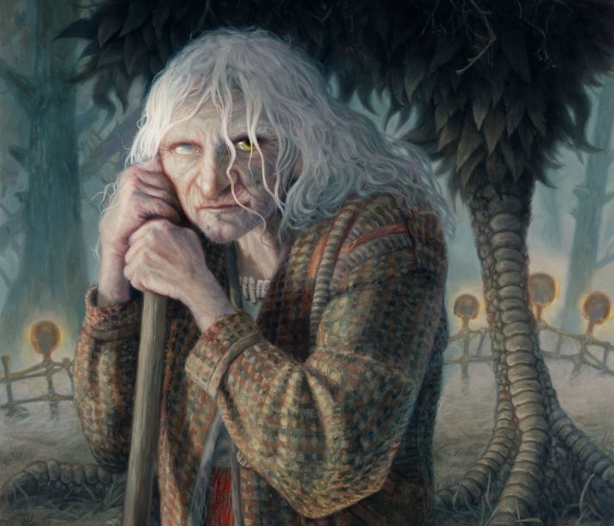

You approach the hut. An ominous chill surrounds the area, which only seems to increase as you get closer. The "yard" of the dwelling is completely overgrown with weeds, and what appears to be the remains of a garden is filled with unknown and somehow malicious-looking plants. Surely no one lives here anymore, right?
You knock on the front door. It never hurts to be polite, after all, just in case somebody actually was home. To your surprise, the door slowly creaks open, and a hideous looking old crone of a woman leaning on a sinister looking staff grins at you wickedly.
"Well well, what have we here? It's rare to have a guest so far out here in the woods. Do come in, I'm nothing if not hospitable..."
What will you do?
